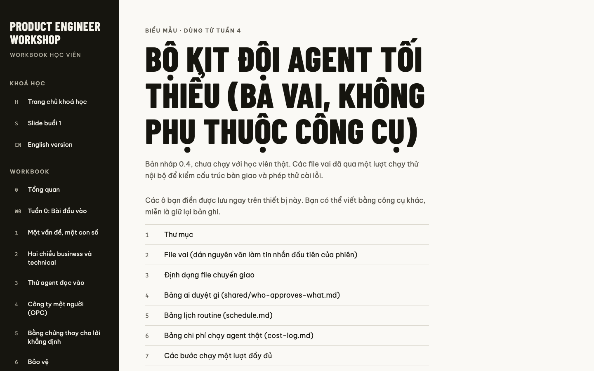

Tự tay ship một thay đổi đo được trước và sau ngay trong công việc hiện tại sau sáu tuần.
Cohort sáu tuần dành cho developer, designer và QA đã có nghề. Mỗi học viên tự tay ship một thay đổi có số đo trước sau bằng workbook và slide.

Mỗi tuần học đẩy bài ship thêm một cột mốc và thêm một lớp cho hệ agent
Bạn bám theo đúng một ship item, tức thay đổi thật trong công việc, suốt sáu tuần. Mở thẳng workbook hoặc slide buổi 1 từ từng hàng bên dưới.
- W0 Trước tuần 1: Bài đầu vào Cột mốcChuẩn bị phỏng vấn, nêu hai vấn đề và nhắn quản lý. Hệ agentChưa dựng hệ agent.
- W1 Một vấn đề, một con số Cột mốcViết xong khung vấn đề một câu và chọn một con số ứng viên. Hệ agentBộ working rules, tức các rule làm việc cá nhân.
- W2 Hai chiều business và technical Cột mốcChốt con số, mở giai đoạn đo baseline, tức mức gốc, và viết spec nghiệm thu. Hệ agentBản spec, tức đặc tả tiêu chí làm đầu vào cho agent.
- W3 Thứ agent đọc vào Cột mốcDựng layer ontology cho vùng việc và build xong phần đầu của bài ship. Hệ agentOntology, bộ skill đầu tiên và agent thực thi Maker.
- W4 Công ty một người (OPC) Cột mốcBản đầu tiên vượt qua Grader, tức agent chấm bài, theo đúng tiêu chí nghiệm thu. Hệ agentĐội ba vai gồm Coordinator, Maker, Grader và lịch tự chạy.
- W5 Bằng chứng thay cho lời khẳng định Cột mốcBài ship qua gate, tới 1 hoặc 2 đồng nghiệp rồi ra người dùng thật. Hệ agentGate biết báo đỏ khi sai và một lịch routine chạy định kỳ.
- W6 Bảo vệ Cột mốcChốt hạn ship cuối, bảo vệ bằng lời và đo lại số sau 2 đến 4 tuần. Hệ agentChuyển bài học từ các lỗi đã gặp thành kiểm tra tự động.
Hai biểu mẫu dùng lại từ tuần 4 để điều phối đội agent và xin phép kể kết quả
- K Bộ kit đội agent Tách ba vai Coordinator, Maker và Grader bằng file Markdown, bảng phân quyền và phép thử cài lỗi. Dùng từ tuần 4.
- P Thư xin phép kể công khai Mẫu thư gửi quản lý xin chia sẻ case study đã bỏ dữ liệu riêng. Dùng ở tuần 6.
Khoá học kéo dài sáu tuần với tối đa năm học viên và không thu thập dữ liệu
- Kho mã nguồn
- jangtrinh/product-engineer-workshop
- Đối tượng học
- Developer, designer và QA đang đi làm, nắm sẵn một sản phẩm, công cụ nội bộ hoặc quy trình để ship.
- Lịch học
- 6 tuần học gồm hai buổi 2 giờ mỗi tuần, thêm 1 buổi bảo vệ đo lại sau 2 đến 4 tuần. Sĩ số tối đa 5 người.
- Phương pháp gốc
- Vòng lặp First Principles Loop cùng bốn trụ cột: tư duy hai chiều, ontology, quản trị OPC và đội agent ba vai.
- Dữ liệu và theo dõi
- Trang web không đặt mã theo dõi. Nội dung bạn gõ nằm trong
localStoragetrên trình duyệt và xuất ra Markdown. - Giấy phép
- Phát hành dạng mã nguồn mở có điều kiện (source-available) theo giấy phép PolyForm Shield 1.0.0 để học và áp dụng vào việc riêng.
Học viên tự tách vấn đề bằng tay trước rồi mới dùng AI phản biện trong sáu tuần
-
1
Bạn chuẩn bị hai vấn đề và gửi tin nhắn cho quản lý từ tuần 0
Bạn chọn hai vấn đề có thật ở công ty và tự hỏi ba lần vì sao bằng tay. Sau đó bạn gửi tin nhắn trong workbook tuần 0 để chốt scope, tức phạm vi bài làm.
-
2
Bạn tách gốc trên giấy ở buổi 1 rồi mới đưa AI vào kiểm chéo
Bạn dành 20 phút đầu buổi tự tách và dựng phương án không dùng AI. Sau đó bạn đối chiếu với mô hình rồi áp vào bài ship bằng công cụ AI công ty cho phép.
-
3
Bạn đo số liệu, chạy đội ba vai và bảo vệ bằng log thật
Bạn đo giai đoạn baseline và giai đoạn sau trên bài ship thật. Từ tuần 4, bạn chạy bộ kit đội agent rồi bảo vệ kết quả có log ở buổi 2.
Khoá học ghép vòng lặp First Principles Loop với bốn trụ cột kỹ thuật và quản trị
Năm bước của First Principles Loop giúp bạn tách sự thật trước khi build
- Bước 1, đóng khung. Bạn viết vấn đề thành một câu có tên người chịu thiệt và phép thử quan sát được.
- Bước 2, tách gốc. Bạn hỏi vì sao nhiều lần bằng sáu nhóm câu hỏi Socratic để tách điều chắc chắn khỏi giả định.
- Bước 3, hỏi điều làm việc này thành thừa. Nếu tìm ra cách bỏ hẳn bước việc đó, bài toán ban đầu đã đổi.
- Bước 4, dựng lại và đảo ngược. Bạn chỉ dựng giải pháp từ điều đã kiểm chứng, rồi tự hỏi giải pháp đó hỏng ở đâu.
- Bước 5, dự đoán rồi thử. Bạn ghi rõ dự đoán trước khi chạy và chọn phép thử ít tốn sức để kiểm chứng.
Bốn trụ cột nối từ bài toán kinh doanh tới bản ontology và vận hành agent
- Tư duy hai chiều business và technical. Bạn đi xuống từ mục tiêu kinh doanh tới quyết định kỹ thuật, rồi đi ngược lên bằng số đo trước và sau.
- Xây dựng layer ontology. Bạn định nghĩa đối tượng, quan hệ có tên và single source of truth để agent đọc đúng context trước khi chạy.
- Quản trị khi vận hành agentic AI. Bạn áp dụng kinh tế đơn vị, giữ an toàn dữ liệu, phân bậc thẩm quyền OPC và kiểm soát bằng gate.
- Tự dựng hệ agentic theo từng tuần. Bạn lắp dần working rules, spec, ontology, skill, đội ba vai, gate báo đỏ và các bước kiểm tự động.
Toàn bộ workbook, slide và bộ kit chạy tĩnh trên trình duyệt mà không cần cài đặt
Ba tài liệu dưới đây dùng HTML tĩnh và tự động lưu dữ liệu ngay trên máy của bạn.
-
Workbook giữ nguyên bài tập từ tuần 0 đến tuần 6 trên máy của bạn
Mỗi ô bạn gõ tự động lưu vào localStorage, kèm nút chép ra Markdown để bạn đưa qua buổi chấm chéo.
Mở workbook tuần 1 -

Sáu bộ slide buổi 1 gồm 174 trang giữ đúng câu hỏi gốc của từng tuần
Slide 11 ở tuần 1 cho thấy bốn bước đầu làm trên giấy, còn bước dự đoán nối thẳng sang bài ship.
Mở slide 11 tuần 1 -

Bộ kit tách ba vai agent để tránh lỗi vừa làm vừa tự chấm bài
Từ tuần 4, Coordinator, Maker và Grader chỉ trao đổi qua file Markdown nên chạy trên mọi cửa sổ chat.
Mở bộ kit đội agent
Năm câu hỏi học viên hay kiểm tra trước khi tham gia khoá học
Khoá học Product Engineer Workshop dành cho những ai?
Khoá học dành cho developer, designer và QA đã vững chuyên môn trong công việc. Bạn cần có quyền đưa một thay đổi thật tới người dùng hoặc đồng nghiệp tại công ty.
Mỗi tuần học viên cần dành bao nhiêu giờ cho lịch học và bài tập?
Mỗi tuần có hai buổi học trực tuyến kéo dài 2 giờ cho phần khái niệm và chấm chéo. Bạn tự làm thêm từ 3 đến 12 giờ tuỳ tuần. Sau tuần 6 khoảng 2 đến 4 tuần, bạn dự buổi bảo vệ đo lại.
Học viên có phải dùng công cụ AI cố định nào cho workbook và bộ kit không?
Không. Bạn tự chọn bất kỳ công cụ AI nào công ty cho phép. Bộ kit đội agent ba vai chạy qua mọi cửa sổ chat bằng cách chuyển file Markdown giữa ba phiên.
Workbook có thu thập dữ liệu hay gửi bài làm lên máy chủ không?
Không. Trang web không đặt mã theo dõi và không có máy chủ lưu bài. Nội dung bạn gõ nằm trong localStorage trên trình duyệt. Bạn có thể chép ra Markdown bất kỳ lúc nào.
Tài liệu khoá học dùng giấy phép nào?
Toàn bộ tài liệu công khai phát hành dạng mã nguồn mở có điều kiện (source-available) theo giấy phép PolyForm Shield 1.0.0. Bạn tự do dùng để học và áp dụng vào việc của mình, nhưng không được bán lại hoặc mở khoá học cạnh tranh.